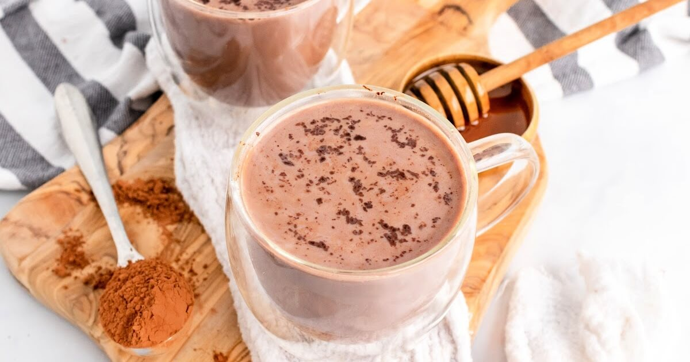

chocolate milk

Description
Description
Chocolate milk is a creamy, sweet beverage made by mixing milk with cocoa powder and sugar. It’s a comforting treat that balances the richness of chocolate with the smoothness of milk, offering a deliciously indulgent yet refreshing drink.
Ingredients
- Raw milk
- Raw honey
- Cacao powder
Steps
- Warm a cup of milk (heat gently on the stove or in the microwave).
- Mix in 1-2 tablespoons of cacao powder (depending on your desired chocolate intensity).
- Add 1-2 teaspoons of honey (or to taste) and stir until dissolved.
- Whisk well to combine all the ingredients and ensure the cacao powder is fully dissolved.
- Enjoy warm, or chill it in the fridge for a cool treat!